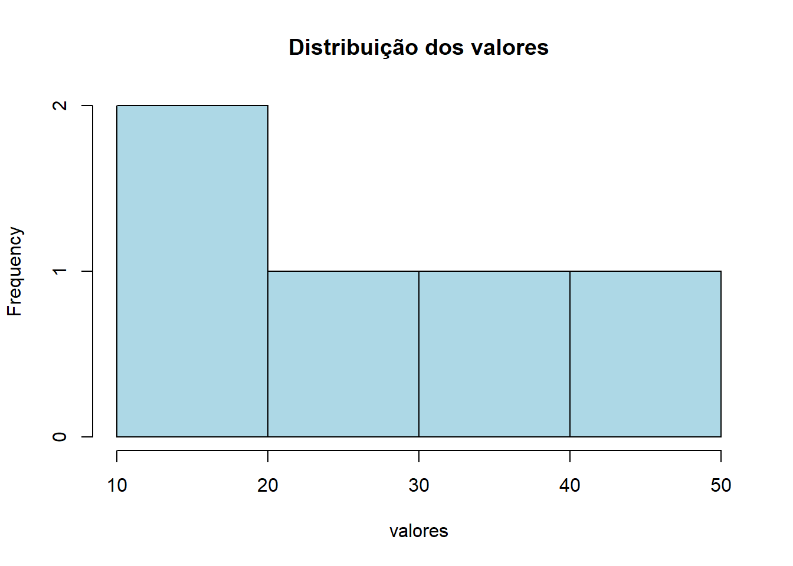

Código
library(leem)
x <- c(1, 2, 3, 4, 5)
mean(x)[1] 3Estatística e Probabilidade
Prof. Ben Dêivide (DEFIM/CAP/UFSJ)
A linguagem R foi criada em 1993, por Ross Ihaka e Robert Gentleman na University of Auckland.
o principal objetivo era criar uma linguagem para suprir uma lacuna no mercado de softwares estatísticos da época. Antes de sua concepção, muitas ferramentas eram caras e de código fechado, limitando o acesso e a colaboração. O R foi, portanto, desenvolvido para ser:
Uma linguagem robusta para a área de estatística e análise de dados.
De fácil uso, tanto para pesquisadores quanto para estudantes, democratizando o acesso a métodos estatísticos avançados.
Gratuita e de código aberto, incentivando a comunidade a contribuir e aprimorar a ferramenta.
2.1 Antes de sua criação, muitos softwares estatísticos eram caros e fechados, como a linguagem S (que inspirou o desenvolvimento da linguagem R).
2.2 Logo o R surgiu como uma alternativa mais flexível e bastante importante que acompanhou as demandas científicas modernas. Essa filosofia permitiu que o R se tornasse uma alternativa poderosa à linguagem S (que serviu de inspiração), acompanhando e impulsionando as demandas científicas e analíticas modernas.
A Adaptabilidade do R: Um Ecossistema em Crescimento
A linguagem R conseguiu se adaptar de maneira rápida ao cenário atual graças a dois pilares fundamentais:
Milhares de Bibliotecas (Pacotes): O R possui uma vasta coleção de pacotes (extensões) desenvolvidos pela comunidade global. Esses pacotes são como aplicativos que adicionam funcionalidades específicas, desde análises estatísticas complexas até a criação de gráficos interativos e modelos de aprendizado de máquina. Essa riqueza de recursos significa que, para quase qualquer desafio de dados, já existe uma solução pronta ou adaptável no R.
Capacidades Gráficas e de Análise: A capacidade do R de gerar visualizações de dados de alta qualidade é um de seus maiores atrativos. Gráficos bem elaborados são essenciais para comunicar insights complexos de forma clara e eficaz. Além disso, suas robustas ferramentas de análise estatística permitem que profissionais de diversas áreas realizem desde testes simples até modelagens preditivas avançadas, transformando dados brutos em informações acionáveis.
Em suma, a importância do R reside em sua capacidade de democratizar a análise de dados, tornando-a acessível a um público amplo. Ele é uma ponte entre os dados e as decisões que moldam nosso mundo, desde a saúde de uma comunidade até a eficiência de uma cidade.
4.1 A linguagem R é o sistema responsável por fazer os cálculos, manipular os dados e apresenta as bibliotecas.
4.2 Já o RStudio é o ambiente de trabalho conhecido como IDE, que oferece uma interface mais organizada e separada.

Este é o coração do desenvolvimento no RStudio. É onde o usuário escreve, edita e salva seus scripts R (.R), documentos R Markdown (.Rmd), Quarto (.qmd) e outros arquivos de código. A principal vantagem de usar o Editor de Script é a capacidade de organizar o trabalho de forma lógica, criar análises reproduzíveis e documentar cada etapa do processo. Permite a execução de linhas de código selecionadas ou do script inteiro, facilitando o desenvolvimento iterativo e a depuração.
Este quadrante é essencial para monitorar o estado atual da sessão R. O painel Environment exibe todos os objetos (variáveis, funções, data frames) que foram criados ou carregados na memória, permitindo uma inspeção rápida de seus valores e estruturas. O painel History mantém um registro de todos os comandos executados, o que é útil para revisitar análises anteriores ou para identificar comandos que precisam ser incluídos em um script. A capacidade de visualizar o ambiente de trabalho em tempo real é crucial para o controle e a depuração de análises complexas.
O Console é a interface direta com o interpretador R. Comandos podem ser digitados e executados instantaneamente, e os resultados são exibidos imediatamente. É ideal para testes rápidos, experimentação e para obter feedback instantâneo sobre a sintaxe ou o comportamento de uma função. Embora scripts sejam preferíveis para análises reproduzíveis, o Console é indispensável para a exploração inicial de dados e para a depuração interativa.
Este quadrante multifuncional consolida diversas ferramentas auxiliares:
Files: Permite navegar pelo sistema de arquivos, criar, renomear e excluir arquivos e diretórios, facilitando a organização do projeto.
Plots: Exibe todos os gráficos gerados pelo código R, permitindo visualizá-los, exportá-los e navegar entre eles. É crucial para a fase de exploração e apresentação de dados.
Packages: Gerencia os pacotes R instalados e carregados. Permite instalar novos pacotes do CRAN (Comprehensive R Archive Network) ou de outras fontes, atualizar pacotes existentes e visualizar a documentação de cada um.
Help: Fornece acesso rápido à documentação de funções, pacotes e tópicos gerais do R, sendo uma ferramenta inestimável para aprendizado e referência.
Viewer: Utilizado para exibir conteúdo web local, como visualizações interativas criadas com pacotes como htmlwidgets ou a saída de documentos R Markdown/Quarto.
5.1 Os códigos na linguagem R podem ser executados tanto por scripts quanto pelo console no RStudio.
5.2 A seguir, será representado um código simples:
library(leem)
x <- c(1, 2, 3, 4, 5)
mean(x)[1] 35.3 O código acima cria um vetor numérico de tamanho 5 e calcula a sua média, demonstrando uma das funções básicas da linguagem R.
6.1 Para programar em R, é fundamental entender como a linguagem organiza as informações. Os principais tipos de dados “atômicos” são:
6.2 Além dos tipos simples, o R utiliza estruturas complexas para armazenar conjuntos de dados:
library(leem)
valores <- c(10,20,30,40,50)
valores |>
new_leem(variable = 2) |>
tabfreq()
Tabela de frequência
Tipo de variável: continuous
Classes Fi PM Fr Fac1 Fac2 Fp Fac1p Fac2p
1 -10 |--- 30 2 10 0.4 2 5 40 40 100
2 30 |--- 70 3 50 0.6 5 3 60 100 60
==============================================
Classes: Agrupamento de classes
Fi: Frequência absoluta
PM: Ponto médio
Fr: Frequência relativa
Fac1: Frequência acumulada (abaixo de)
Fac2: Frequência acumulada (acima de)
Fp: Frequência percentual
Fac1p: Frequência acumulada percentual (abaixo de)
Fac2p: Frequência acumulada percentual (acima de) hist(valores, main = "Distribuição dos valores", col = "lightblue")
7.0 - Onde usar o R?
O R ocupa um espaço relevante no mercado de trabalho, especialmente em áreas como ciência de dados, estatística, finanças, saúde e marketing. Empresas e instituições utilizam a linguagem para extrair valor de dados e apoiar decisões estratégicas. Organizações como o Google, o Facebook (atual Meta), e o IBM já utilizaram ou utilizam R em diferentes contextos analíticos. Além disso, instituições financeiras e órgãos de pesquisa — como o Banco Central do Brasil e o IBGE empregam R para modelagem estatística, previsões econômicas e análise de grandes volumes de dados.
7.1 - Porque o R?
Um dos grandes diferenciais do R está na sua capacidade de manipulação e visualização de dados. Pacotes como o tidyverse transformaram a forma como profissionais lidam com dados, tornando o processo mais intuitivo e produtivo. Isso é extremamente valorizado no mercado, onde a agilidade na análise e a clareza na comunicação de resultados são essenciais. Ferramentas como Shiny e R Markdown também permitem a criação de dashboards e relatórios interativos, habilidades cada vez mais exigidas por empresas que precisam comunicar insights de forma clara para diferentes públicos.
7.2 - O futuro da linguagem R.
Com o avanço da ciência de dados e da inteligência artificial, cresce a necessidade de ferramentas que não apenas construam modelos, mas também permitam interpretá-los com precisão e é justamente aí que o R se destaca, graças à sua forte base estatística. Além disso, a integração com outras linguagens, como Python (por meio de pacotes como o reticulate)
7.3 - R em meu curriculo.
Em termos de empregabilidade, dominar R pode abrir portas para cargos como cientista de dados, analista de dados, estatístico e pesquisador. Empresas valorizam profissionais que sabem transformar dados em decisões e o R é uma das ferramentas mais eficientes para isso. Mais do que uma linguagem de programação, ele se consolidou como uma competência estratégica no mercado atual.